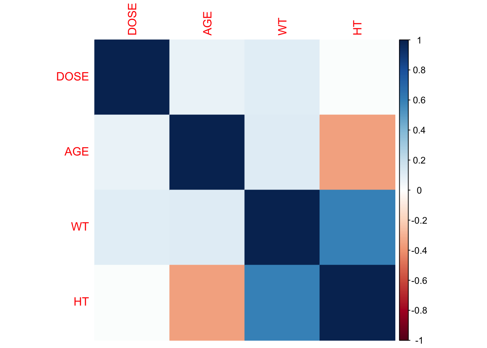
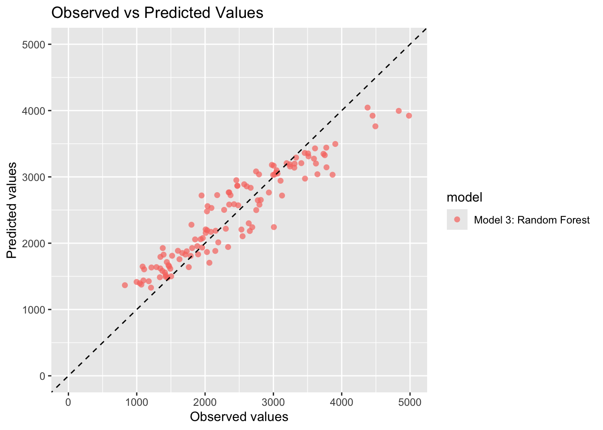
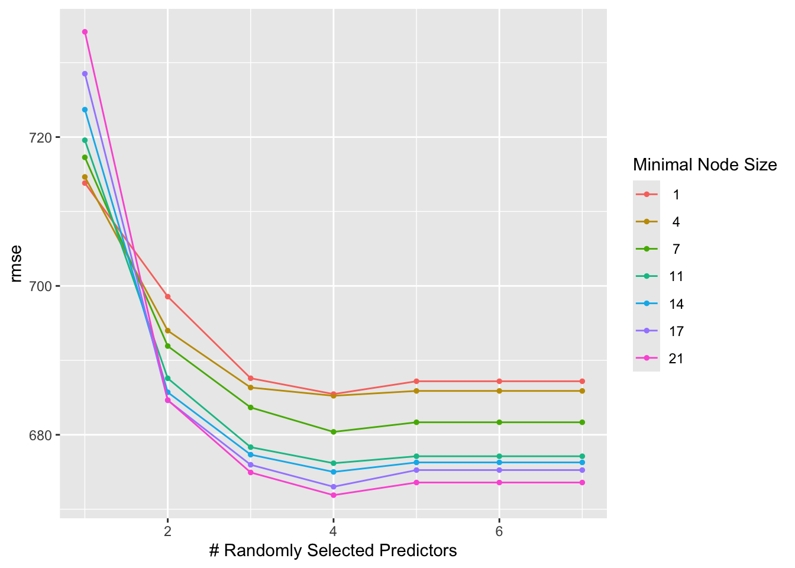

── Conflicts ────────────────────────────────────────── tidyverse_conflicts() ──
✖ dplyr::filter() masks stats::filter()
✖ dplyr::lag() masks stats::lag()
ℹ Use the conflicted package (<http://conflicted.r-lib.org/>) to force all conflicts to become errors
Warning: package 'broom.mixed' was built under R version 4.5.2
library(dotwhisker)library(Metrics)
Attaching package: 'Metrics'
The following objects are masked from 'package:yardstick':
accuracy, mae, mape, mase, precision, recall, rmse, smape
library(yardstick)library(corrplot)
corrplot 0.95 loaded
library(glmnet)
Loading required package: Matrix
Attaching package: 'Matrix'
The following objects are masked from 'package:tidyr':
expand, pack, unpack
Loaded glmnet 4.1-10
library(ranger)
Warning: package 'ranger' was built under R version 4.5.2
##Pairwise correlation for continuous variables, also need to remove Y because its the outcomecontinuous_mavo <- mavo_final %>%select(where(is.numeric)) %>%select(-Y)cor_mat <-cor(continuous_mavo)corrplot(cor_mat, method ="color")

As expected, some things (like weight and hieght) are correlated, but not too strongly, so colinearity shouldnt be a problem.
Feature Engineering
##Add BMI column (Best guess looking at heights and weights, I think weights is currently in kg and heights currently in meters), formula for BMI = weight(kg) / (height(m))^2mavo_final <- mavo_final %>%mutate(BMI = WT / (HT*HT))
First Model - Linear Regression
lm_mavo <-linear_reg() %>%set_engine("lm")lm_mavo_fit <- lm_mavo %>%fit(Y ~ DOSE + AGE + SEX + RACE + WT + HT, data = mavo_final)tidy(lm_mavo_fit)
Warning: Using the `size` aesthetic with geom_segment was deprecated in ggplot2 3.4.0.
ℹ Please use the `linewidth` aesthetic instead.
ℹ The deprecated feature was likely used in the dotwhisker package.
Please report the issue at <https://github.com/fsolt/dotwhisker/issues>.
# A tibble: 2 × 3
.metric .estimator .estimate
<chr> <chr> <dbl>
1 rmse standard 379.
2 rsq standard 0.882
#Make observed vs predicted plotpredict_model3 <- predict_mavo3 %>%select(Y, .pred) %>%mutate(model ="Model 3: Random Forest")##Plot predicted vs observedggplot(predict_model3, aes(x = Y, y = .pred, color = model, shape = model)) +geom_point(size =2, alpha =0.7) +geom_abline(slope =1, intercept =0, linetype ="dashed") +coord_cartesian(xlim =c(0, 5000), ylim =c(0, 5000)) +labs(x ="Observed values", y ="Predicted values", title ="Observed vs Predicted Values")

RMSE is 379, MADA website said it was supposed to be around 362, so this is pretty close. Also as expected, the random forest model has values closest to the line compared to the other two models.
Tuning Models - Without CV (BAD PRACTICE)
##Start with LASSO Modelrecipe_all <-recipe(Y ~ ., data =select(mavo_final, where(is.numeric)))lasso_grid <-tibble(penalty =10^seq(-5, 2, length.out =50))lasso_tune <-linear_reg(penalty =tune(), mixture =1) %>%set_engine("glmnet")lasso_tune_wf <-workflow() %>%add_recipe(recipe_all) %>%add_model(lasso_tune)app_resamples <-apparent(mavo_final)lasso_tune_res <-tune_grid(lasso_tune_wf, resamples = app_resamples, grid = lasso_grid, metrics =metric_set(yardstick::rmse))#autoplot(lasso_tune_res) ###Error saying "Only one observation per metric was present. Unable to create meaningful plot."##Now do the Random Forest Modelrf_tune <-rand_forest(trees =300, mtry =tune(), min_n =tune()) %>%set_engine("ranger", seed = rngseed) %>%set_mode("regression")rf_tune_wf <-workflow() %>%add_recipe(recipe_all) %>%add_model(rf_tune)rf_grid <-grid_regular(mtry(range =c(1, 7)), min_n(range =c(1, 21)), levels =7)rf_tune_res <-tune_grid(rf_tune_wf, resamples = app_resamples, grid = rf_grid, metrics =metric_set(yardstick::rmse))
→ A | warning: ! 6 columns were requested but there were 5 predictors in the data.
ℹ 5 predictors will be used.
There were issues with some computations A: x1
→ B | warning: ! 7 columns were requested but there were 5 predictors in the data.
ℹ 5 predictors will be used.
There were issues with some computations A: x1
There were issues with some computations A: x5 B: x5
There were issues with some computations A: x7 B: x7
#autoplot(rf_tune_res) ###Error saying "Only one observation per metric was present. Unable to create meaningful plot."
Okay the autoplot function gave me the same error twice and google and chatgpt both are telling me that using CV will fix this problem, which I think is going to be the purpose of the next part, so for now I will leave this as is?
→ A | warning: ! 6 columns were requested but there were 5 predictors in the data.
ℹ 5 predictors will be used.
There were issues with some computations A: x1
→ B | warning: ! 7 columns were requested but there were 5 predictors in the data.
ℹ 5 predictors will be used.
There were issues with some computations A: x1
There were issues with some computations A: x49 B: x42
There were issues with some computations A: x137 B: x118
There were issues with some computations A: x230 B: x200
There were issues with some computations A: x337 B: x294
There were issues with some computations A: x417 B: x363
There were issues with some computations A: x513 B: x447
There were issues with some computations A: x617 B: x539
There were issues with some computations A: x708 B: x618
There were issues with some computations A: x796 B: x695
There were issues with some computations A: x897 B: x784
There were issues with some computations A: x994 B: x869
There were issues with some computations A: x1080 B: x943
There were issues with some computations A: x1180 B: x1031
There were issues with some computations A: x1281 B: x1120
There were issues with some computations A: x1360 B: x1188
There were issues with some computations A: x1400 B: x1225
autoplot(rf_cv_res)

collect_metrics(lasso_cv_res)
# A tibble: 50 × 7
penalty .metric .estimator mean n std_err .config
<dbl> <chr> <chr> <dbl> <int> <dbl> <chr>
1 0.00001 rmse standard 625. 25 19.9 pre0_mod01_post0
2 0.0000139 rmse standard 625. 25 19.9 pre0_mod02_post0
3 0.0000193 rmse standard 625. 25 19.9 pre0_mod03_post0
4 0.0000268 rmse standard 625. 25 19.9 pre0_mod04_post0
5 0.0000373 rmse standard 625. 25 19.9 pre0_mod05_post0
6 0.0000518 rmse standard 625. 25 19.9 pre0_mod06_post0
7 0.0000720 rmse standard 625. 25 19.9 pre0_mod07_post0
8 0.0001 rmse standard 625. 25 19.9 pre0_mod08_post0
9 0.000139 rmse standard 625. 25 19.9 pre0_mod09_post0
10 0.000193 rmse standard 625. 25 19.9 pre0_mod10_post0
# ℹ 40 more rows
collect_metrics(rf_cv_res)
# A tibble: 49 × 8
mtry min_n .metric .estimator mean n std_err .config
<int> <int> <chr> <chr> <dbl> <int> <dbl> <chr>
1 1 1 rmse standard 714. 25 25.9 pre0_mod01_post0
2 1 4 rmse standard 715. 25 25.9 pre0_mod02_post0
3 1 7 rmse standard 717. 25 26.0 pre0_mod03_post0
4 1 11 rmse standard 720. 25 26.0 pre0_mod04_post0
5 1 14 rmse standard 724. 25 26.0 pre0_mod05_post0
6 1 17 rmse standard 729. 25 26.2 pre0_mod06_post0
7 1 21 rmse standard 734. 25 26.3 pre0_mod07_post0
8 2 1 rmse standard 699. 25 23.3 pre0_mod08_post0
9 2 4 rmse standard 694. 25 23.1 pre0_mod09_post0
10 2 7 rmse standard 692. 25 22.8 pre0_mod10_post0
# ℹ 39 more rows
As expected, the RMSE for LASSO does indeed look better than the RMSE for the Random Forest.